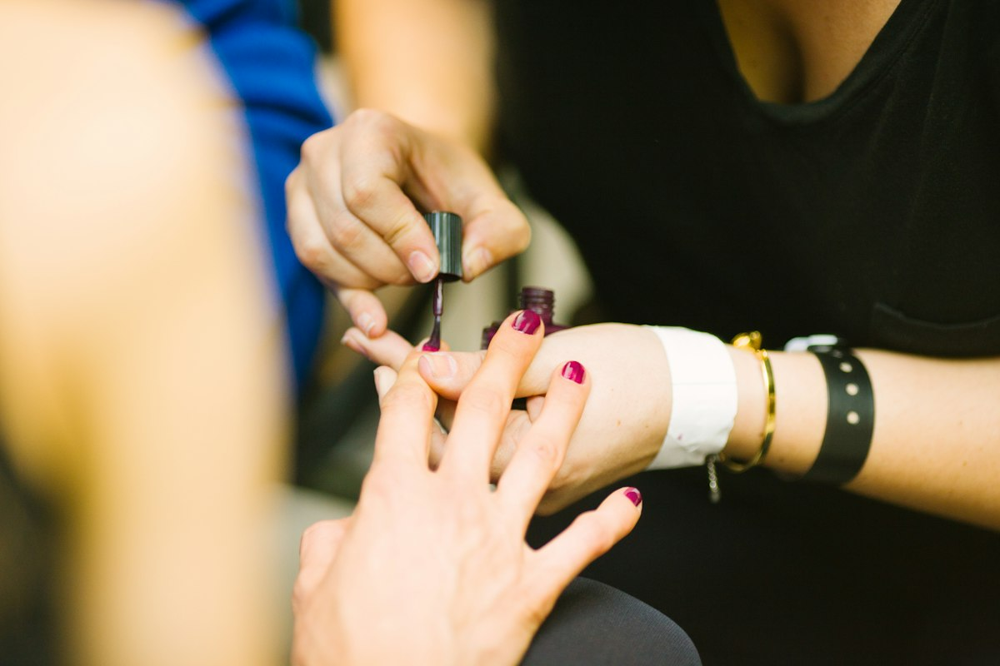

Structured overlay
Tortoise & Noir
Deep tortoiseshell accents with a glossy black finish.
Confirm with Denise · Book
Portfolio archive • Kimberley atelier
Minimalist aesthetics, natural lengths, structured strength. Crafted by Denise in Kimberley.
Structured overlay
Deep tortoiseshell accents with a glossy black finish.
Confirm with Denise · Book

Structured overlay
Translucent nude over a structured overlay — barely-there gloss.
Confirm with Denise · Book

Minimal art
Muted grey, clean white and a single glitter accent.
Confirm with Denise · Book

Natural nail care
Shaping and finishing at the atelier table, one client at a time.
Confirm with Denise · Book

Earth & terracotta
Hairline terracotta tips on a natural base.
Confirm with Denise · Book
Earth & terracotta
A soft nude wash that lets the natural nail show through.
Confirm with Denise · Book
Natural nail care
Short, neat and glossed — everyday natural length.
Confirm with Denise · Book
Showing 8 of 8 sample sets.
Sample portfolio: these photographs are sample images representing Denise’s style of structured overlay craft and minimal design. They are not photographs of the studio’s own clients or work. Real portfolio photographs will replace them once the studio supplies them.
Bespoke nail art sessions
Bring your inspiration photograph or sketch to your consultation. Denise will advise whether it suits your natural nails — and what it would take.
Every set starts with the natural nail: its condition, its shape, its past wear. The design is chosen around the nail — never forced onto it.
50% non-refundable deposit required upon confirmation. 44a Nooitgedacht Street, Royldene, Kimberley, Northern Cape 8301, South Africa.